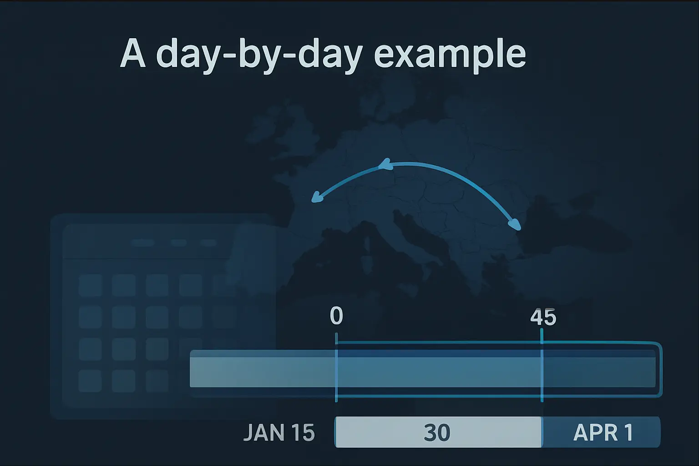
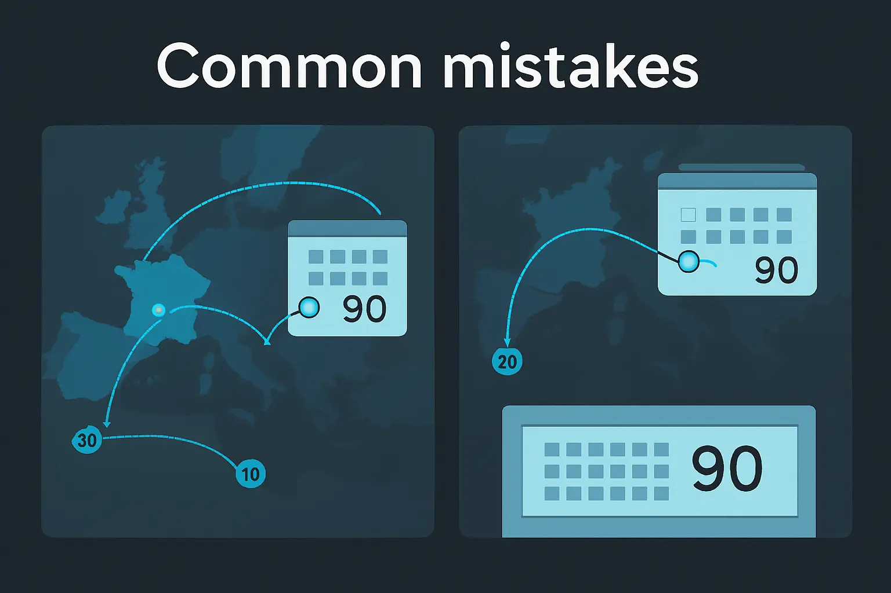

How the Schengen Rolling Window Actually Works
A day-by-day walkthrough of the 90/180-day rule — the same math the tracker does for you.
Last verified: March 2026
The rule in one sentence
You may stay in the Schengen Area for a maximum of 90 days within any rolling 180-day period, and this limit applies to all 29 Schengen member states combined. It does not matter whether you spend those 90 days in a single country or spread them across ten different ones — France, Germany, Spain, Italy, and every other Schengen state share the same counter. Once you have accumulated 90 days of presence within the current 180-day lookback window, you must leave and wait until enough days expire from the window before you can re-enter.
What "rolling" really means
This is where most people get confused. The 90/180 rule is not a simple "90 days on, 90 days off" system. There is no fixed period that resets on a calendar date. Instead, the 180-day window slides forward by one day, every single day.
Here is how to think about it: on any given date, look back exactly 180 days. Count every day you were physically present in the Schengen Area during that 180-day window. If the total is 90 or fewer, you are within the limit. If it exceeds 90, you have overstayed.
Tomorrow, the window shifts forward by one day. The oldest day in today's window drops off the back, and a new day is added at the front. This means that a day you spent in the Schengen Area 181 days ago no longer counts against you — it has "rolled off" the window. This rolling mechanic is what makes the rule both flexible and genuinely difficult to calculate by hand.
The practical effect is that days gradually become available again as they age past the 180-day mark, one at a time. You do not get a lump-sum reset of 90 days. You reclaim days individually, in the same order you used them.
A day-by-day example

Let's walk through a realistic scenario with specific dates.
Trip 1: Paris
You arrive in Paris on January 15 and depart on February 13. Both the entry day and the exit day count as days of presence. That gives you 30 days used (January 15 through February 13 inclusive).
Trip 2: Amsterdam
You return to the Schengen Area, arriving in Amsterdam on April 1 and departing on May 15. That is 45 days (April 1 through May 15 inclusive).
After these two trips, you have used 75 days total (30 + 45). You still have 15 days remaining in any 180-day window that contains both trips.
Scenario A: Can you return on September 1?
To answer this, look back 180 days from September 1. A 180-day lookback from September 1 reaches back to March 6. Now count the Schengen days that fall within this March 6 through September 1 window:
- Trip 1 (Jan 15 - Feb 13): This entire trip falls before March 6, so zero days from Trip 1 are counted. All 30 days have rolled off the window.
- Trip 2 (Apr 1 - May 15): This trip falls entirely within the window, so all 45 days are counted.
Total days used in the 180-day window ending September 1: 45 days. You have 45 days remaining. You can absolutely enter on September 1 and stay for up to 45 more days.
Scenario B: What if you try to return on July 1?
Now look back 180 days from July 1. That reaches back to January 3. Count the Schengen days within this January 3 through July 1 window:
- Trip 1 (Jan 15 - Feb 13): The entire trip falls within the window. That is 30 days.
- Trip 2 (Apr 1 - May 15): The entire trip also falls within the window. That is 45 days.
Total days used: 75 days. You have only 15 days remaining. You could enter on July 1, but you would need to leave by July 15 at the latest.
If you wanted to stay longer, you would need to wait. Specifically, you would need to wait until enough days from Trip 1 start rolling off the window. Trip 1 started on January 15, so that day rolls off 180 days later, on July 14. Each subsequent day, another day from Trip 1 expires. By July 14, one day has freed up. By August 13, all 30 days from Trip 1 have rolled off, giving you a full 45 days of remaining allowance again.
Key insight: The rolling window does not ask "when did you last leave?" It asks "how many days were you present in the last 180 days?" This is why two travelers with identical trip histories can have different remaining allowances depending on what date they check — the window moves every day, and old days gradually fall off the back.
Common mistakes

Even experienced travelers get tripped up by the rolling window. Here are the most frequent errors:
Thinking 90 consecutive days means a 90-day reset
If you stay for 90 days straight and then leave, you do not get a fresh 90 days after waiting 90 days. Because the window is 180 days, and you used 90 days at the start of it, those 90 days only begin to roll off one at a time starting 180 days after your first day of entry. You will gradually reclaim days, not receive them all at once.
Forgetting that all Schengen countries share one counter
A week in France, ten days in Italy, and two weeks in Spain are not tracked separately. They all draw from the same 90-day pool. Hopping between Schengen countries does not buy you extra time — there are no border checks between member states, and the rule treats the entire Schengen Area as a single zone.
Counting "days outside" instead of looking back 180 days
Some travelers try to count how many days they have been outside the Schengen Area, assuming that once they have been out for a certain number of days, their allowance resets. This is the wrong approach. The only correct method is to look back 180 days from the date in question and count the days of presence within that window. Time spent outside the Schengen Area only matters insofar as it means fewer days of presence inside the window.
Not counting both entry and exit days
The day you arrive and the day you depart both count as days of presence. A trip from Monday to Wednesday is three days, not two. This is a frequent source of off-by-one errors that can push you over the limit unexpectedly, especially if you are cutting it close to 90 days.
Why this is hard to do by hand
If you only take one trip per year, the math is straightforward. But most people who worry about the 90/180 rule are making multiple trips — a business conference in Berlin, a vacation in Greece, a long weekend in Lisbon, a family visit in Vienna. Each trip adds a block of days to your rolling window, and each block ages off at a different time.
To accurately check your status, you need to look at every single date from today back 180 days and determine whether you were inside or outside the Schengen Area on each one. If you have three or four trips in the window, you are juggling overlapping date ranges, counting inclusive days, and doing it all against a deadline that shifts daily.
One miscounted day — forgetting a layover in a Schengen airport, miscounting the days in a month, or overlooking the fact that entry and exit days both count — can push you from 89 to 91 days. That single day can result in an overstay on your record, fines at the border, or a ban on future Schengen entry.
Spreadsheets can help, but they require manual updates and careful formula construction. If you forget to log a trip or make an error in a date, the entire calculation is off and you may not realize it until a border officer points it out.
Set this up in AtlasDays
AtlasDays includes a Schengen tracker that performs this exact rolling-window calculation automatically. When you log your trips, the app looks back 180 days from today and counts your days of presence — the same math described in this article, but done instantly and without error.
The tracker shows you:
- Days used in the current 180-day window
- Days remaining before you hit the 90-day limit
- Next available full-stay date — the earliest date you could enter and stay for a full 90 days
- Warnings as you approach the limit, so you can adjust travel plans before it becomes a problem
All you need to do is log your entry and exit dates. The app handles the rolling window, the inclusive day counting, and the multi-trip overlap. If you also travel to countries with other visa rules, each one gets its own tracker in the same place.
This article is for informational purposes only and does not constitute immigration or legal advice. Immigration rules change frequently. Consult a qualified immigration attorney or check official Schengen regulations for guidance on your specific situation.
Let the tracker do the math
AtlasDays calculates your Schengen rolling window automatically once your trips are logged.
Join the waitlist